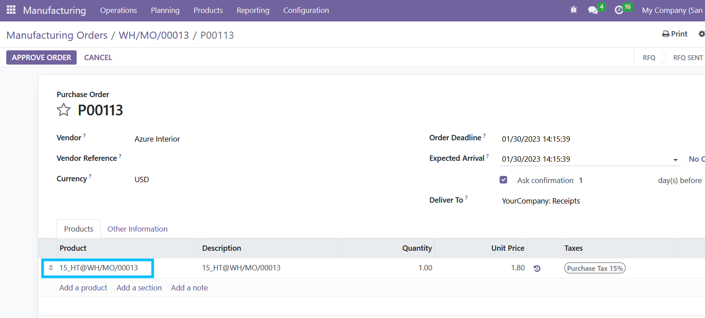

Usage
In draft veriosn, buggy without test, welcome to discuss in Github Repo: https://github.com/hastelloy/mrp_operation_subcontracting
Set the vendor's site as a subcontract workcenter.
Create BOM by setting the operation with subcontract workcenter.
Purchase order for the subcontracting operation will be created for the service product.

The service product is named with the Operation id, name and Manufacturing Order name.
